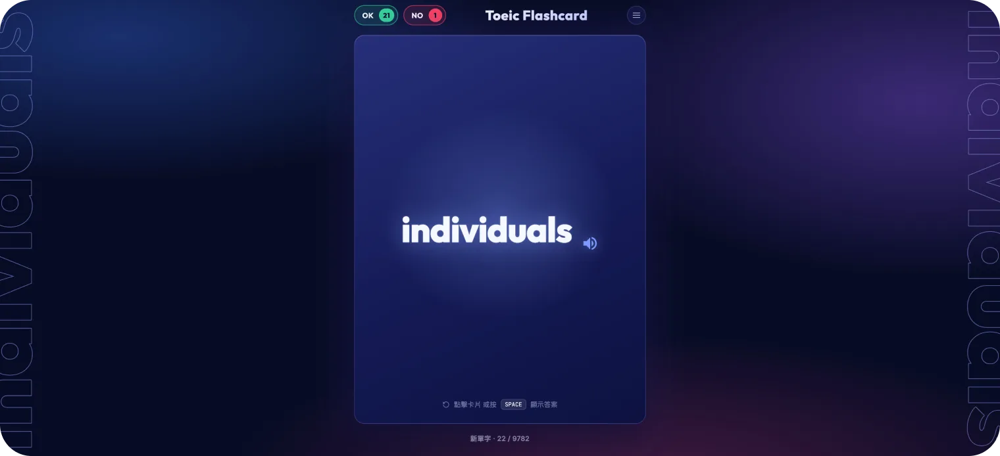
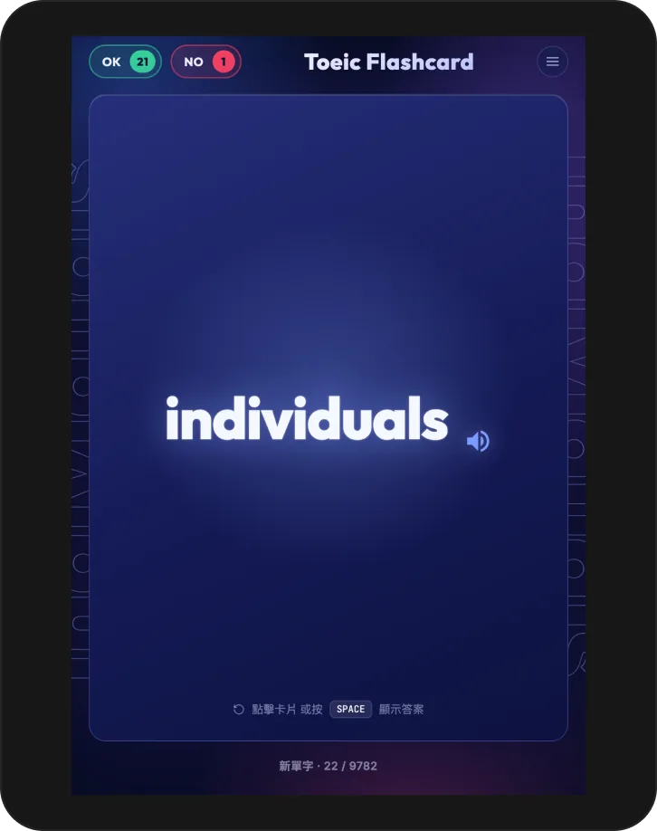
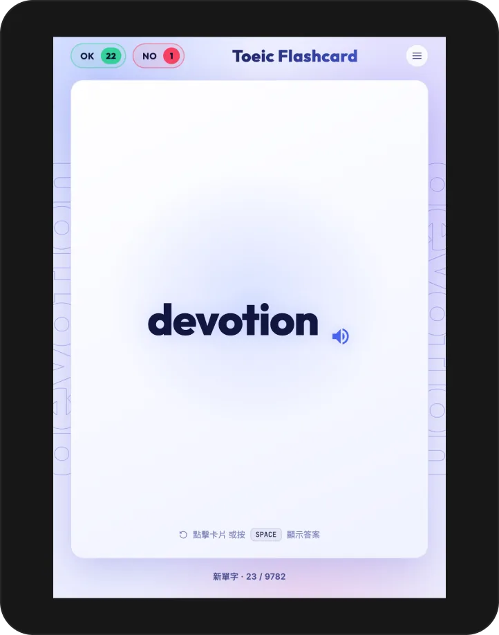
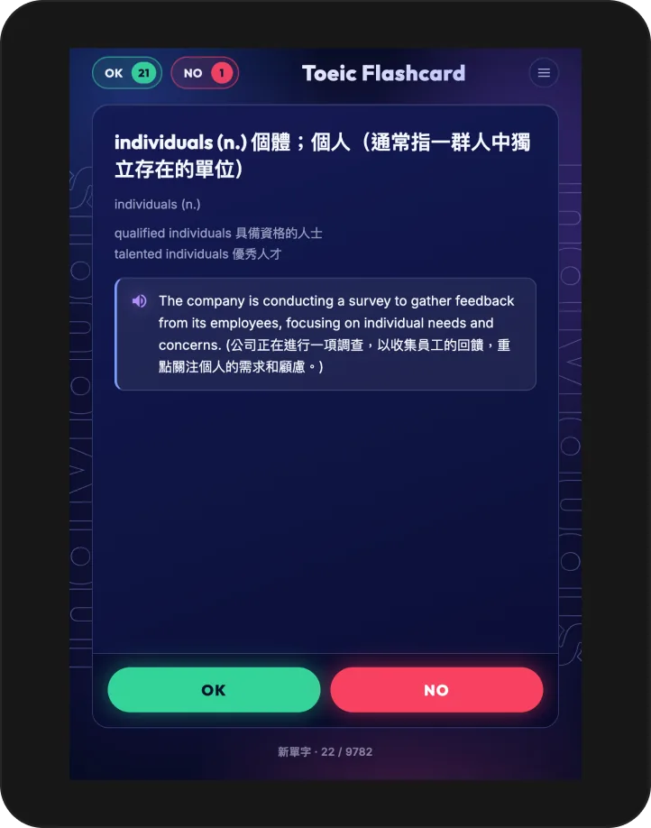
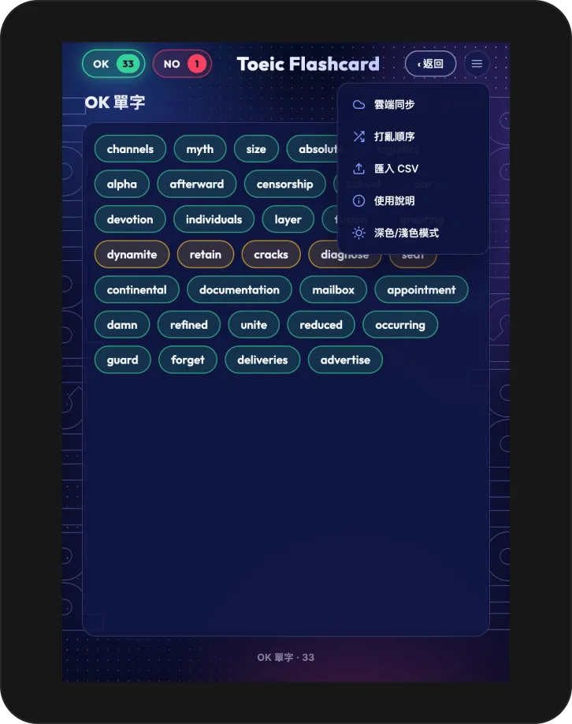

TOEIC FC
English Learning
類型AI · 學習工具
使用工具

Problem
零碎時間的有效運用一直是我想追求的目標，回想國高中通勤搭公車時，手上拿著單字卡背誦就是最經典的做法。這次想以此為題，作為接觸 AI 開發的敲門磚與起始專案；同時也希望藉此提升自己的英文能力，準備 TOEIC 測驗時，若能有一個順手的小工具輔助複習，會很有幫助。


Process
我將整體邏輯設計得單純直接：單字只分成「已背起來」與「還沒背起來」兩種狀態。使用者可以點擊進入這兩個清單，重新檢視與複習單字；當還沒背起來的單字之後成功記住時，系統會特別標注，並將其歸類移動到已完成的清單中，讓進度變化清楚可見。


Result
完成後的工具讓 TOEIC 單字複習變得更聚焦——不需要在一長串單字表中反覆翻找，只要專注在「還沒背起來」的清單上重複加強記憶，同時能透過標注機制即時看到自己的學習進度累積，善用零碎時間也能持續推進背誦成效。
Reflection
作為接觸 AI 開發的第一個專案，這次刻意選擇了一個單純、需求明確的題目，讓我能專注在從 0 到 1 完成一個可用工具的完整流程，而不被複雜邏輯分散注意力。雖然單字卡這類題目很多人做過，但透過親手實作，我更踏實地掌握了 AI 輔助開發的基本節奏與思維方式，也為後續像 My Dashboard、Sport Journey 這類更複雜的專案打下了基礎。